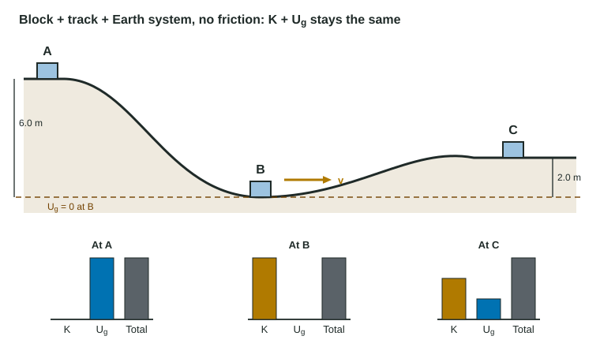

Energy is never created or destroyed. That one sentence is the most powerful tool in Unit 3, but only if you use it with care. You must say which objects are in your system, what energy forms they have, and whether any energy crosses the boundary. This page builds that bookkeeping step by step, then shows how energy bar charts make it visible.
Step one: choose the system
A system is whatever you draw a boundary around. The choice decides which energies you count:
- A single object (a block alone) has only kinetic energy. Earth's pull on it is an external force, and its work moves energy into or out of the block.
- Object + Earth has kinetic energy and gravitational potential energy. Gravity is now internal; instead of doing external work, it changes U_g.
- Object + spring adds elastic potential energy in the same way.
- Object + Earth + rough surface also contains the thermal energy that friction produces.
Both views give the same answer. For a block sliding down a track: block alone, W_grav = +mgh = ΔK. Block + Earth, ΔU_g = −mgh, so ΔK = +mgh. Same speed. What you must not do is mix them: counting U_g and the work done by gravity counts the same energy twice.
Step two: the energy equation
The conservation of energy says a system's energy changes only by the energy transferred across its boundary. In mechanics that transfer is work done by external forces:
K_i + U_i + W_external = K_f + U_f + ΔE_thermal
The mechanical energy of a system is K + U. It stays constant only under a condition: no external force does net work on the system (a closed system), and no nonconservative force such as kinetic friction acts inside it. Then K_i + U_i = K_f + U_f.
Always state that condition when you justify a claim. "Mechanical energy is conserved because energy is conserved" earns nothing; total energy is always conserved, and mechanical energy often is not. "The track is frictionless and the normal force is perpendicular to the motion, so no work is done on the block-Earth system and K + U_g stays constant" earns the point.
Worked example 1. A 1.5 kg block is released from rest at A, 5.0 m above the lowest point B of a frictionless track, and slides up to C, 1.8 m above B. Find its speeds at B and C. Use g = 9.8 m/s².
System: block + track + Earth. The track is frictionless and its normal force does no work, so K + U_g is constant. Zero of U_g at B.
A to B: mg(5.0 m) = ½mv_B², so v_B = √(2 × 9.8 × 5.0) m/s = 9.9 m/s.
A to C: mg(5.0 m) = mg(1.8 m) + ½mv_C², so v_C = √(2 × 9.8 × 3.2) m/s = 7.9 m/s.
The mass cancels: a 3.0 kg block would have the same speeds.
Energy bar charts

An energy bar chart (sometimes an LOL diagram) shows each energy form of the system at two moments, side by side, with a column for any work done by external forces. The rules:
- Name the system above the chart.
- Make bar heights match the situation. An object at rest has no K bar. An object at the zero of height has no U_g bar. A relaxed spring has no U_s bar.
- The bars before, plus any work in, must equal the bars after. Do not split bars evenly by default; compute or estimate them.
- Thermal energy from friction gets its own bar, which only grows.
Each bar becomes one term in the energy equation. That makes the bar chart and the equation two views of the same statement, which is exactly what the Translation Between Representations question asks you to show.
Careful with springs: U_s ∝ (Δx)². A cart compressing a spring is at half its greatest compression when only one quarter of its energy is stored, not half; K is still three quarters of the total.
When mechanical energy is not constant
Kinetic friction turns mechanical energy into thermal energy (the surfaces warm up), and impacts turn some into sound. The exam asks you to calculate only the mechanical part; the "missing" mechanical energy equals the energy dissipated. For kinetic friction acting over a path length d, that is f_k d.
Worked example 2. A 70.0 kg snowboarder starts from rest at the top of a slope 25.0 m high and reaches the bottom at 18.0 m/s after riding 80.0 m along the slope. How much mechanical energy is dissipated, and what is the average friction force?
Top: K + U_g = 0 + (70.0)(9.8)(25.0) J = 17,150 J. Bottom: ½(70.0)(18.0)² J = 11,340 J.
Dissipated: 17,150 J − 11,340 J = 5.81 × 10³ J of thermal energy and sound.
Friction: f(80.0 m) = 5810 J, so f = 72.6 N.
If you include the snow in the system, friction is internal and the total (K + U_g + thermal) stays constant. If you leave it out, friction is an external force doing negative work on the skier-Earth system. Either way, no energy disappears.
A checklist for energy problems
- Name the system and the two moments you are comparing.
- Pick the zero of U_g (often the lowest point).
- Draw a bar chart: which energies exist at each moment? Is any work done by external forces?
- Write one equation term per bar, substitute, and solve. Put K only where the object moves.
- Check: does the answer depend on mass when it should not? Is every speed from a square root?